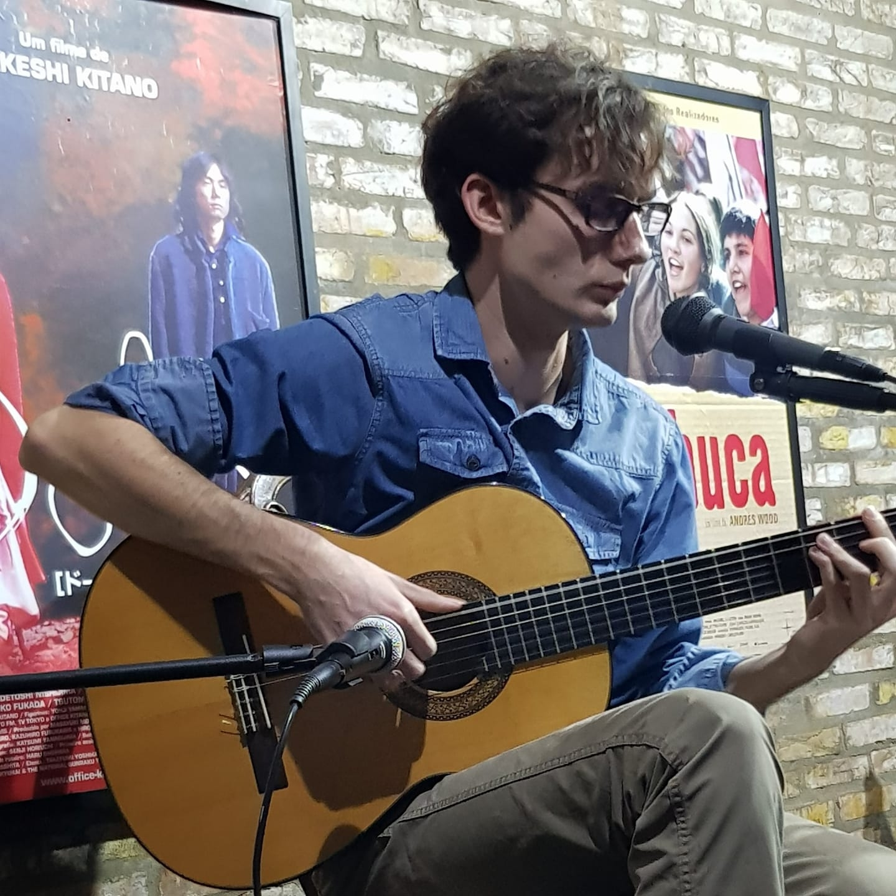

Moodan
 Moodan is a classical guitarist and composer. After solid guitar studies in the Paris conservatory of music, he works as a guitar teacher in the Légion d'honneur education houses and other conservatory and music schools. Composer and performer, he plays his own pieces and interpret others in concerts across France and other countries via his website/group "Partita".Also a (self-taught) visual artist for years, he re-discovered the pleasure of mixing music and visuals with digital art and NFTs. Although fairly new in this universe, he convinced approximately 100 collectors on Tezos with his compositions, art, and collabs with other artists. Even newer in the Ethereum market, he sold 2 unique pieces so far out of 4 on the market.